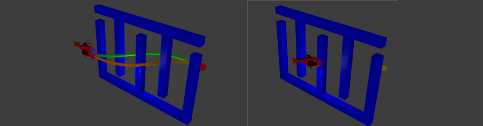
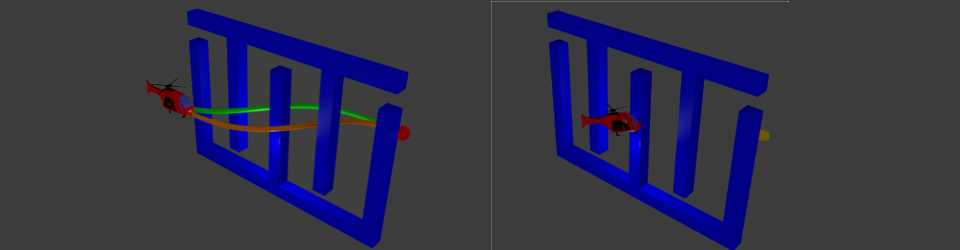

|
I am a Robotics PhD student at the Center for Robotics and Intelligent Machines at Georgia Tech; currently a member of the Cognitive Robotics Lab and formerly also a member of the Humanoid Robotics Lab. I am currently advised by Prof. Henrik Christensen (previously by Prof. Mike Stilman). My research interests focus on generalizable robot bimanual manipulation. I investigate the design of benchmarking manipulation tasks and how these can be used to develop robots that are actually useful in the real world. Check out the Research section of my page for more information. Thanks! |
|
News:
- March 18th, 2015: We had to sent Crichton's right elbow drive back for repair. Crichton is temporarily crippled :(
- March 1st, 2015: Submitted to IROS, crossing fingers! (Update: Did anybody say extension, WHAT?)
- January 30th, 2015: Our paper in grasping objects based on superquadrics was accepted for ICRA 2015. Seattle here we go!
- November 2014: Traveled to Humanoids (courtesy of a Kanako Miura Travel Fellowship) to present our work in handover tasks